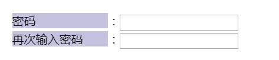
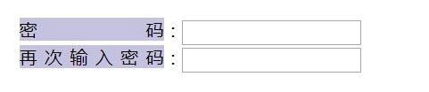
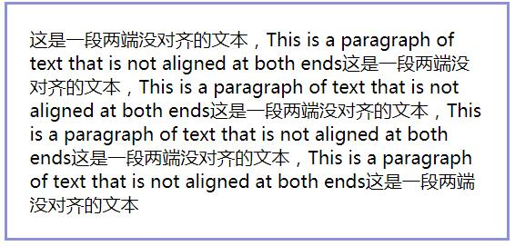
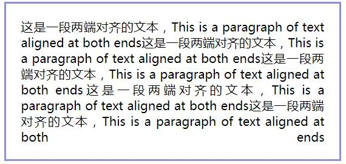
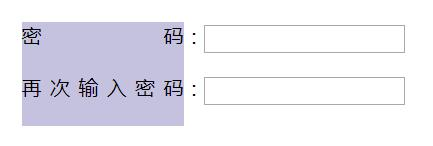
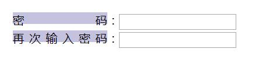
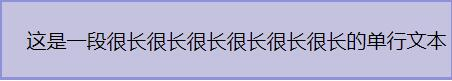
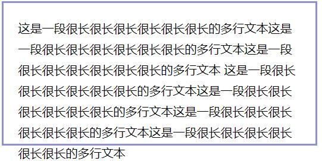
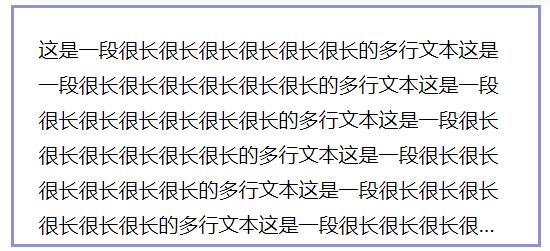

两个常用的css小技巧
在构建一些页面时经常会碰到一些问题，其中有两个是比较频繁遇到，因此先马克防止以后再次遇到而忘记怎么做。
文本两端对齐
首先是单行文本
<div>
<span>密码</span>：<input type="text"><br>
<span>再次输入密码</span>：<input type="text">
</div>

将css属性设置如下：
.span {
text-align-last: justify;
}

test-align-last属性为控制最后一行文本对齐方式，因为只有一行，所以就当作文本最后一行来看待，而在多行文本中，必须添加text-align:justify属性，如：

.span {
text-align: justify;
text-align-last: justify;
}

当然，去掉text-align-last:justify;属性最后一行就左对齐了
所有主流浏览器都支持 text-align 的 justify 属性值，部分浏览器不支持text-align-last属性
那么对于单行文本两端对齐，如果想要兼容大部分浏览器，可以使用::after伪类，给元素最后设置一个看不见的内联元素，并设置宽度为100%，就可以让我们可以看到的单行文本让浏览器认为是多行文本，从而实现单行文本的两端对齐
.span {
text-align: justify;
vertical-align: top;
}
.span:after {
content: "";
display: inline-block;
width: 100%;
overflow: hidden;
height: 0;
}

可能看上去高度会有些变化，这时可以给span设置个高度就行了
.span {
height: 1em;
text-align: justify;
vertical-align: top;
}

文本多余文字用省略号代替
这也是一种经常会遇到的情况，首先是单行文本：

p{
text-overflow: ellipsis;
overflow: hidden;
}
text-overflow: ellipsis;兼容性很好
多行文本时

p{
text-overflow: ellipsis;
display: -webkit-box; /** 将对象作为伸缩盒子模型显示 **/
-webkit-box-orient: vertical; /** 设置或检索伸缩盒对象的子元素的排列方式 **/
-webkit-line-clamp: 6; /** 显示的行数 **/
overflow: hidden;
}

这种方式的兼容性并不友好，只对内核为-webkit-的浏览器兼容，还有一种简单的方法，用js来控制字数，在这里就不说了